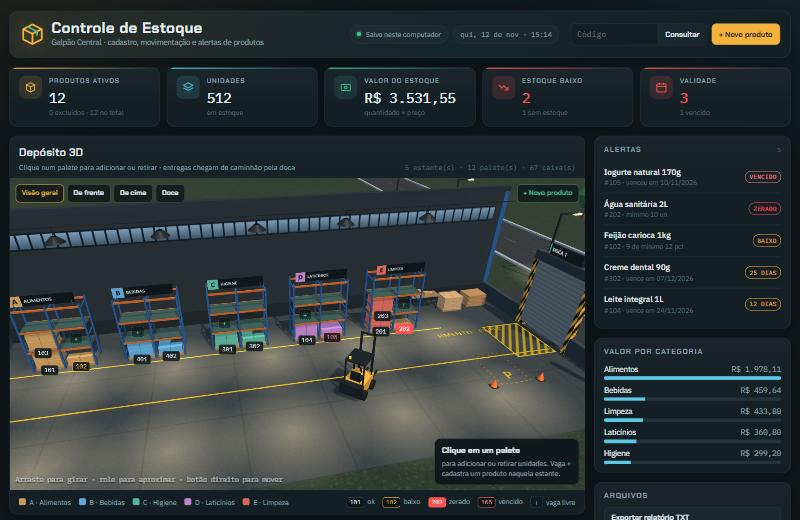
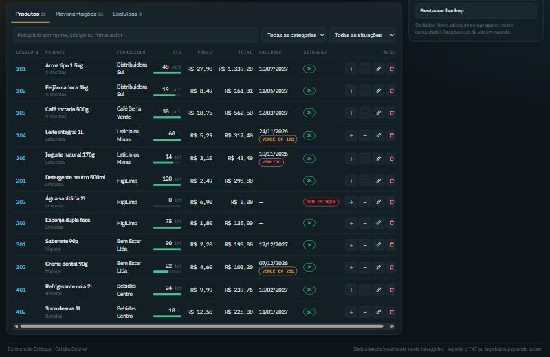
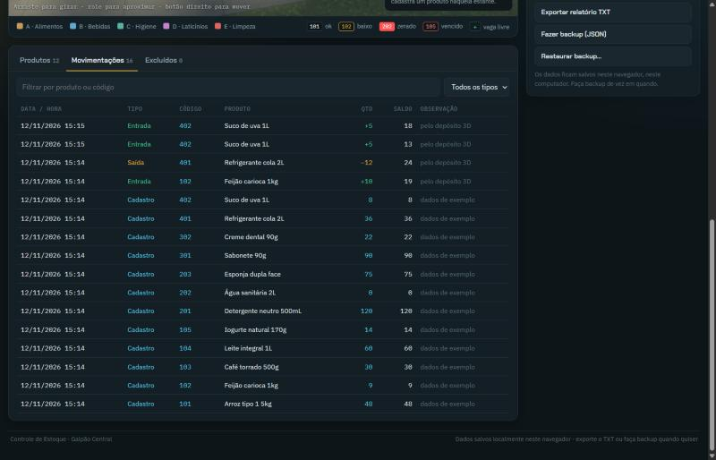
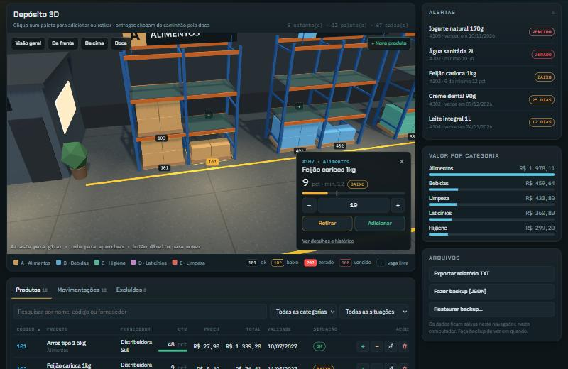
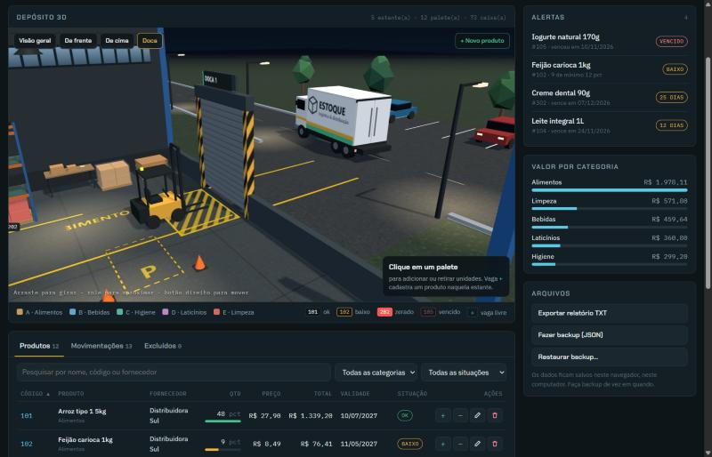

O controle de estoque é uma das atividades mais importantes de qualquer empresa que trabalha com produtos físicos, seja um supermercado, uma farmácia ou um centro de distribuição. Saber quais produtos existem, em que quantidade, qual o valor parado no depósito e quando é preciso comprar novamente evita prejuízos com falta de mercadoria, excesso de compras e produtos vencidos.
Este trabalho apresenta o desenvolvimento de um software de Controle de Estoque de Produtos. A parte principal, exigida no enunciado, foi desenvolvida em linguagem C e grava os registros em um arquivo binário, implementando as cinco funcionalidades obrigatórias: cadastrar registros, consultar por código, exportar para arquivo texto, excluir registros por exclusão lógica e contabilizar os registros ativos no menu.
Além do programa em C, o grupo desenvolveu uma aplicação com interface visual que segue as mesmas regras do programa em C (código único, exclusão lógica por status, exportação em TXT e contagem de ativos) e acrescenta recursos de um estoque real: entrada e saída de mercadorias, estoque mínimo, fornecedor, validade, histórico de movimentações, alertas e um depósito em 3D, no qual os produtos aparecem como caixas em paletes nas estantes de um galpão, com empilhadeira e caminhão de entregas animados. O objetivo dessa segunda parte é facilitar a interpretação do estoque e tornar a apresentação do trabalho mais clara.
Objetivo geral: desenvolver um sistema de controle de estoque de produtos em linguagem C que armazene os dados em arquivo binário e ofereça as operações básicas de manutenção dos registros.
Objetivos específicos:
struct) com seus dados fundamentais e um campo de status;fopen,
fread, fwrite, fseek);O enunciado exige que o sistema implemente obrigatoriamente as funcionalidades abaixo. A tabela mostra onde cada uma foi atendida no programa em C e na aplicação visual.
| Requisito | Programa em C (estoque.c) | Aplicação visual (estoque.html) |
|---|---|---|
| Cadastrar registros | Função cadastrarProduto(): lê código, nome, categoria, quantidade e preço, impede código repetido e grava no fim de produtos.dat. | Botão “+ Novo produto” ou vaga “+” no depósito 3D; campos extras de fornecedor, unidade, estoque mínimo e validade. |
| Consultar por código | Função consultarProduto(), que usa buscarPorCodigo() para percorrer o arquivo e exibe todos os dados e o valor total. | Campo “Código” + “Consultar” no topo; abre a ficha do produto com histórico e destaca o palete no 3D. |
| Exportar para TXT | Função exportarTxt(): cria produtos.txt com tabela formatada, total de produtos e valor do estoque. | Botão “Exportar relatório TXT”: baixa estoque.txt com todos os campos e marcações de estoque baixo e vencimento. |
| Excluir (exclusão lógica) | Função excluirProduto(): troca o campo status de 'A' para 'E' e regrava o registro no mesmo lugar com fseek. | Botão de lixeira: o produto recebe status “E” e vai para a aba “Excluídos”, de onde pode ser restaurado. |
| Contabilizar registros | Função contarAtivos(), chamada a cada exibição do menu, que mostra também o total gravado no arquivo. | Indicador “Produtos ativos” no topo, com o número de excluídos e o total. |
A solução é formada por dois programas que ficam na mesma pasta, ControleEstoque:
| Arquivo | Função |
|---|---|
estoque.c | Código-fonte do programa em linguagem C (entrega principal). Compilado gera estoque.exe. |
produtos.dat | Arquivo binário criado pelo programa em C. Guarda os registros um após o outro, cada um com o tamanho exato da struct Produto. |
produtos.txt | Relatório em texto gerado pela opção “Exportar”. |
estoque.html | Aplicação com interface visual e depósito 3D. Abre com dois cliques em qualquer navegador moderno (Edge, Chrome). |
As duas versões seguem as mesmas regras de negócio: o código identifica o produto, não existem dois produtos ativos com o mesmo código, a exclusão é sempre lógica (por status) e a contagem considera apenas os registros ativos.
O programa foi escrito em C padrão (C99), usando apenas as bibliotecas stdio.h, stdlib.h e
string.h. Por isso compila no Dev-C++, no Code::Blocks ou em qualquer compilador GCC, sem dependências
externas. Nos testes ele compilou sem nenhum aviso com as opções -Wall -Wextra -std=c99 -pedantic.
Cada produto é representado por uma estrutura com seus dados fundamentais. O campo status é o que permite a
exclusão lógica: 'A' indica registro ativo e 'E' indica registro excluído.
#define ARQ_DADOS "produtos.dat" #define ARQ_TEXTO "produtos.txt" #define STATUS_ATIVO 'A' #define STATUS_EXCLUIDO 'E' typedef struct { int codigo; /* identificador do produto */ char nome[50]; /* descrição do produto */ char categoria[30]; /* ex.: Alimentos, Limpeza */ int quantidade; /* unidades em estoque */ float preco; /* preço unitário */ char status; /* 'A' = ativo, 'E' = excluído */ } Produto;
Como todos os campos têm tamanho fixo (inclusive os textos, que são vetores de char), todos os registros
ocupam exatamente sizeof(Produto) bytes no arquivo. Isso permite calcular a posição de qualquer registro
multiplicando o seu índice pelo tamanho da estrutura, o que é usado na exclusão lógica.
Os registros ficam no arquivo produtos.dat, gravados em sequência. A função abrirArquivo() abre o
arquivo no modo "rb+" (leitura e escrita binária). Se o arquivo ainda não existir, ela o cria com
"wb+":
FILE *abrirArquivo(void) { FILE *fp = fopen(ARQ_DADOS, "rb+"); if (fp == NULL) fp = fopen(ARQ_DADOS, "wb+"); /* primeira execução */ if (fp == NULL) printf("Erro: nao foi possivel abrir o arquivo %s.\n", ARQ_DADOS); return fp; }
A busca de um produto é feita pela função buscarPorCodigo(). Ela volta ao início do arquivo
(rewind) e lê um registro por vez com fread. Ao encontrar um registro ativo com o código
procurado, devolve a posição dele (0 para o primeiro, 1 para o segundo e assim por diante) e copia os dados para a
variável recebida. Se não encontrar, devolve -1. Os registros excluídos são ignorados, por isso um produto
excluído não aparece em consultas.
long buscarPorCodigo(FILE *fp, int codigo, Produto *saida) { Produto p; long pos = 0; rewind(fp); while (fread(&p, sizeof(Produto), 1, fp) == 1) { if (p.status == STATUS_ATIVO && p.codigo == codigo) { if (saida != NULL) *saida = p; return pos; } pos++; } return -1; }
Um problema comum em programas de console é usar scanf diretamente: se o usuário digita uma letra onde se
espera um número, o programa entra em laço infinito ou grava lixo. Para evitar isso, toda a entrada passa por três funções
auxiliares:
lerTexto() lê uma linha inteira com fgets, remove o “Enter” do final, descarta o excesso se a
linha for maior que o campo e não aceita texto vazio. Se a entrada terminar (Ctrl+Z), encerra o programa com
segurança;lerInteiro() usa lerTexto() e converte com strtol, conferindo se a linha inteira é
um número e se ele é maior ou igual ao mínimo permitido (por exemplo, código ≥ 1 e quantidade ≥ 0);lerReal() faz o mesmo para o preço com strtod e aceita vírgula ou ponto como separador decimal
(o usuário pode digitar 27,90 ou 27.90).int lerInteiro(const char *rotulo, int minimo) { char buf[64]; char *fim; long valor; for (;;) { lerTexto(rotulo, buf, sizeof buf); valor = strtol(buf, &fim, 10); if (*fim == '\0' && valor >= minimo) return (int)valor; printf(" Valor invalido. Informe um numero inteiro >= %d.\n", minimo); } }
A função cadastrarProduto() abre o arquivo, pede o código e, antes de continuar, usa
buscarPorCodigo() para garantir que não exista outro produto ativo com o mesmo código. Depois lê nome,
categoria, quantidade e preço, define o status como ativo e grava o registro no final do arquivo:
p.status = STATUS_ATIVO;
fseek(fp, 0, SEEK_END); /* vai para o fim do arquivo */
if (fwrite(&p, sizeof(Produto), 1, fp) == 1)
printf("Produto cadastrado com sucesso!\n");
A estrutura é zerada com memset antes do preenchimento, para que o arquivo não contenha restos de memória nas
partes não usadas dos textos.
A função consultarProduto() abre o arquivo apenas para leitura ("rb"), pede o código e chama
buscarPorCodigo(). Se o produto existir e estiver ativo, a função exibirProduto() mostra código, nome,
categoria, quantidade, preço unitário e o valor total (quantidade × preço). Caso contrário, informa que o produto
não foi encontrado.
A função exportarTxt() lê todos os registros do arquivo binário e escreve no arquivo produtos.txt
somente os ativos, em forma de tabela com colunas alinhadas. As larguras fixas do fprintf
(%-8d, %-30.30s, %12.2f) alinham as colunas e cortam textos muito longos, deixando o
relatório legível em qualquer editor (Bloco de Notas, por exemplo). No final são escritos o total de produtos ativos e o
valor total do estoque.
while (fread(&p, sizeof(Produto), 1, fp) == 1) { if (p.status != STATUS_ATIVO) continue; /* ignora excluídos */ fprintf(txt, "%-8d %-30.30s %-20.20s %8d %12.2f\n", p.codigo, p.nome, p.categoria, p.quantidade, p.preco); valorEstoque += p.quantidade * p.preco; qtd++; }
Este é o ponto central do enunciado. Na exclusão física o registro seria apagado e o arquivo teria de ser
reescrito sem ele. Na exclusão lógica, usada aqui, o registro continua no arquivo e apenas o campo
status é alterado para 'E'. Assim:
A função excluirProduto() localiza o produto, mostra os dados e pede confirmação (S/N). Confirmada a exclusão,
ela usa a posição devolvida por buscarPorCodigo() para levar o ponteiro do arquivo exatamente até o início
daquele registro com fseek e regrava somente ele:
p.status = STATUS_EXCLUIDO;
fseek(fp, pos * (long)sizeof(Produto), SEEK_SET); /* início do registro */
if (fwrite(&p, sizeof(Produto), 1, fp) == 1)
printf("Produto excluido com sucesso.\n");
Exemplo: se o produto excluído é o terceiro do arquivo (posição 2) e cada registro ocupa 96 bytes, o
fseek posiciona o ponteiro no byte 2 × 96 = 192. O fwrite sobrescreve apenas esses 96 bytes,
agora com status = 'E'. Os demais registros não são tocados.
Depois da exclusão, o produto deixa de aparecer na consulta, no relatório TXT e na contagem de ativos, mas continua contado no total gravado no arquivo, como mostra a seção seguinte.
Duas funções fazem a contagem que aparece no cabeçalho do menu:
contarAtivos() percorre o arquivo e conta os registros com status == 'A', que é a quantidade de
produtos realmente em uso;contarTotalGravados() calcula quantos registros existem fisicamente no arquivo, ativos e excluídos, dividindo
o tamanho do arquivo pelo tamanho de um registro: posiciona no fim com fseek(fp, 0, SEEK_END), obtém o
tamanho em bytes com ftell e divide por sizeof(Produto).Mostrar os dois números deixa visível o funcionamento da exclusão lógica: ao excluir um produto, o número de ativos diminui, mas o total gravado continua o mesmo.
A função main() repete o menu com um laço do…while até o usuário escolher 0. A cada volta, o
cabeçalho é redesenhado com a contagem atualizada, e a opção escolhida é tratada por um switch, que chama a função
correspondente. Depois de cada operação, pausar() espera o Enter para o usuário conseguir ler o resultado.
==========================================
CONTROLE DE ESTOQUE DE PRODUTOS
==========================================
Produtos ativos: 2 (gravados no arquivo: 2)
------------------------------------------
1 - Cadastrar produto
2 - Consultar produto por codigo
3 - Exportar produtos para TXT
4 - Excluir produto
0 - Sair
==========================================
Opcao:
O trecho abaixo foi obtido executando o programa compilado: cadastro de dois produtos, consulta do código 101 e exclusão lógica do código 201. Os valores digitados pelo usuário não aparecem porque a entrada foi fornecida por arquivo durante o teste.
=== CONSULTAR PRODUTO POR CODIGO === Codigo: ---------------------------------------- Codigo : 101 Nome : Arroz tipo 1 5kg Categoria : Alimentos Quantidade : 48 Preco unit.: R$ 27.90 Valor total: R$ 1339.20 ---------------------------------------- === EXCLUIR PRODUTO === Codigo do produto a excluir: ---------------------------------------- Codigo : 201 Nome : Detergente neutro 500mL Categoria : Limpeza Quantidade : 120 Preco unit.: R$ 2.49 Valor total: R$ 298.80 ---------------------------------------- Confirma a exclusao? (S/N): Produto excluido com sucesso. Produtos ativos: 1 (gravados no arquivo: 2)
Em seguida, a opção 3 gerou o arquivo produtos.txt. O produto excluído não aparece no relatório:
RELATORIO DE ESTOQUE DE PRODUTOS ================================================================================== CODIGO NOME CATEGORIA QTD PRECO (R$) ---------------------------------------------------------------------------------- 101 Arroz tipo 1 5kg Alimentos 48 27.90 ---------------------------------------------------------------------------------- Total de produtos ativos: 1 Valor total em estoque : R$ 1339.20
Para tornar o sistema mais próximo de um estoque real e mais fácil de interpretar, o grupo desenvolveu uma segunda
versão com interface gráfica, no arquivo estoque.html. Ela é feita com HTML, CSS e JavaScript, roda direto no
navegador e não precisa de instalação nem de servidor. Os dados ficam salvos no próprio navegador (localStorage), ou
seja, continuam lá ao fechar e abrir de novo o arquivo no mesmo computador.
Essa versão mantém as mesmas regras do programa em C e acrescenta:
No topo ficam o nome do sistema, a indicação de que os dados estão sendo salvos, a data e a hora, o campo de consulta por código e o botão de novo produto. Logo abaixo, cinco indicadores resumem o estoque:

A aba “Produtos” lista todos os produtos ativos com código, nome, categoria, fornecedor, quantidade (com uma barra que compara o estoque com o mínimo), preço, valor total, validade e situação. É possível pesquisar por nome, código ou fornecedor, filtrar por categoria ou situação (estoque baixo, sem estoque, vencidos ou vencendo) e ordenar clicando no título de qualquer coluna. Cada linha tem botões de entrada (+), saída (−), editar e excluir, e um clique na linha abre a ficha completa do produto.

No cadastro, o sistema sugere automaticamente o próximo código livre, não aceita código repetido entre produtos ativos e confere cada campo antes de gravar, mostrando a mensagem de erro ao lado do formulário. Na edição o código e a quantidade ficam bloqueados: o código identifica o produto, e a quantidade só muda por meio de entradas e saídas, para que todo movimento fique registrado no histórico.
A entrada representa uma compra ou recebimento e soma unidades ao estoque. A saída representa uma venda ou uso e subtrai unidades. Antes de confirmar, a janela mostra como ficará o saldo e avisa quando ele ficará abaixo do mínimo. A saída é bloqueada se a quantidade pedida for maior do que o estoque disponível, para que o saldo nunca fique negativo. As duas operações podem ser feitas pela tabela, pela ficha do produto ou diretamente no depósito 3D.
Assim como no programa em C, excluir um produto apenas muda o seu status para “E”. Ele sai da lista, da contagem e do relatório, mas fica guardado na aba “Excluídos”, com a data da exclusão e o botão “Restaurar”. A restauração só é permitida se não houver outro produto ativo com o mesmo código.
O painel de alertas mostra, em ordem de prioridade, os produtos vencidos, zerados, abaixo do mínimo e os que vencem nos próximos 30 dias. A aba “Movimentações” guarda o histórico de tudo o que aconteceu (cadastro, entrada, saída, edição, exclusão e restauração), com data, hora, quantidade, saldo resultante e observação.

O botão “Exportar relatório TXT” gera o arquivo estoque.txt com todos os produtos ativos ordenados por
código, incluindo fornecedor, mínimo e validade, e com as marcações [BAIXO], [VENCIDO] e
[VENCENDO]. No final aparecem os totais de produtos ativos e excluídos, de unidades e o valor do estoque.
Como os dados ficam no navegador, o sistema oferece também “Fazer backup”, que salva tudo em um arquivo
.json, e “Restaurar backup”, que carrega esse arquivo em outro computador ou navegador.
O depósito 3D foi criado para facilitar a interpretação do estoque: em vez de ler números em uma tabela, o usuário vê um galpão com estantes, paletes e caixas, e percebe de imediato o que está cheio, o que está acabando e o que está vencido. Ele foi construído com a biblioteca gráfica Three.js, que desenha cenas 3D no navegador usando a placa de vídeo (WebGL).
O galpão é gerado a partir dos dados sempre que algo muda no estoque:
O usuário pode girar a câmera arrastando o mouse, aproximar com a roda e mover com o botão direito. Há também atalhos de câmera: “Visão geral”, “De frente”, “De cima” e “Doca”. Ao passar o mouse sobre um palete aparece o nome e a quantidade do produto; ao clicar, a câmera se aproxima e abre um painel com a quantidade atual, uma barra comparando com o mínimo e os botões Adicionar e Retirar, onde se escolhe quantas unidades movimentar. Clicar em uma vaga livre (+) abre o cadastro já com a categoria daquela estante preenchida.

Cada movimentação é representada por uma animação logística completa. Os veículos seguem um roteiro de passos (andar até um ponto, fazer curva, dar ré, virar, levantar ou baixar o garfo, esperar) executado quadro a quadro, e a empilhadeira e o caminhão se sincronizam por sinais: a empilhadeira só entra no caminhão quando ele termina de encostar e abrir as portas, e o caminhão só vai embora depois que a carga foi retirada ou colocada.

Para deixar a representação mais realista, o cenário inclui elementos ilustrativos de um centro de distribuição. Dentro do galpão há piso de concreto, faixas amarelas de circulação, janelas altas, luminárias, um escritório com placa e ar-condicionado, um relógio de parede que mostra a hora real, uma bancada de embalagem, paletes de expedição, a vaga demarcada da empilhadeira, a área zebrada da doca, extintor, placa de uso de EPI e tambores. Do lado de fora ficam o pátio de manobra, uma rua com meio-fio e faixa tracejada, postes de iluminação, um estacionamento com carros e árvores, sob um céu de fim de tarde.
Se o computador estiver sem internet (a biblioteca 3D é carregada da internet) ou sem suporte a gráficos 3D, o sistema mostra um aviso no lugar do depósito, e todas as outras funções continuam funcionando normalmente.
estoque.c no Dev-C++ (ou outra IDE com compilador GCC);gcc estoque.c -o estoque, seguido de
estoque;produtos.dat e produtos.txt são criados
na mesma pasta do programa.estoque.html; ele abre no navegador padrão (recomendado: Edge ou Chrome);| Caso de teste | Resultado obtido |
|---|---|
Compilar estoque.c com -Wall -Wextra -std=c99 -pedantic | Compilou sem erros e sem avisos. |
| Cadastrar produtos e conferir a contagem no menu | Contador passou de 0 para 1 e depois para 2. |
| Cadastrar com código já existente | Recusado com a mensagem “Ja existe um produto ativo com o codigo…”. |
| Digitar letras no campo de quantidade | Valor recusado e pedido novamente, sem travar. |
| Preço com vírgula (27,90) e com ponto (2.49) | Os dois formatos foram aceitos corretamente. |
| Consultar código existente e inexistente | Exibiu todos os dados no primeiro caso e “nao encontrado” no segundo. |
| Excluir produto (exclusão lógica) | Ativos caiu de 2 para 1 e o total gravado continuou 2; o produto não aparece mais na consulta. |
| Exportar TXT após exclusão | Relatório gerado só com o produto ativo e com os totais corretos. |
| App visual: dados após recarregar a página | Todos os produtos e movimentações continuaram salvos. |
| App visual: saída maior que o estoque | Bloqueada com “Estoque insuficiente”. |
| App visual: excluir e restaurar | Produto foi para “Excluídos” e voltou à lista ao restaurar. |
| Depósito 3D: adicionar, retirar e cadastrar pela vaga “+” | Caixas e etiquetas atualizadas; caminhão e empilhadeira executaram a sequência de entrega e de retirada. |
O trabalho atingiu o objetivo proposto: o programa em linguagem C implementa todas as funcionalidades obrigatórias, armazenando os produtos em um arquivo binário com registros de tamanho fixo, o que permite localizar e alterar um registro diretamente pela sua posição. A exclusão lógica por campo de status se mostrou simples e segura, pois preserva a integridade do arquivo e mantém o histórico dos dados, e a contagem exibida no menu deixa esse comportamento visível ao usuário.
Durante o desenvolvimento, o grupo praticou conceitos fundamentais da disciplina: estruturas (struct),
manipulação de arquivos binários e de texto (fopen, fread, fwrite, fseek,
ftell, fprintf), modularização em funções, laços, decisões e validação de entrada.
A aplicação com interface visual e o depósito 3D mostram como as mesmas regras podem ser levadas para um sistema mais completo e intuitivo, com entradas e saídas, alertas, histórico e uma representação gráfica que facilita entender o estado do estoque. Como melhorias futuras, o sistema poderia ganhar controle de usuários, relatórios por período e integração com leitor de código de barras.
DEITEL, P.; DEITEL, H. C: como programar. 6. ed. São Paulo: Pearson Prentice Hall, 2011.
KERNIGHAN, B. W.; RITCHIE, D. M. C: a linguagem de programação padrão ANSI. Rio de Janeiro: Campus, 1989.
SCHILDT, H. C completo e total. 3. ed. São Paulo: Makron Books, 1997.
THREE.JS. Three.js documentation. Disponível em: https://threejs.org/docs/. Acesso em: 12 nov. 2026.
/*
* Controle de Estoque de Produtos
* --------------------------------
* Funcionalidades:
* 1 - Cadastrar produto
* 2 - Consultar produto por codigo
* 3 - Exportar produtos para arquivo texto (TXT)
* 4 - Excluir produto (exclusao logica via campo status)
* Contagem de produtos ativos exibida no menu.
*
* Os registros ficam gravados no arquivo binario "produtos.dat".
* Compilar: gcc estoque.c -o estoque
*/
#include <stdio.h>
#include <stdlib.h>
#include <string.h>
#define ARQ_DADOS "produtos.dat"
#define ARQ_TEXTO "produtos.txt"
#define STATUS_ATIVO 'A'
#define STATUS_EXCLUIDO 'E'
typedef struct {
int codigo;
char nome[50];
char categoria[30];
int quantidade;
float preco;
char status; /* 'A' = ativo, 'E' = excluido */
} Produto;
/* ---------- Funcoes auxiliares de entrada ---------- */
/* Le uma linha do teclado, removendo o '\n' final. */
void lerTexto(const char *rotulo, char *destino, int tamanho) {
for (;;) {
printf("%s", rotulo);
if (fgets(destino, tamanho, stdin) == NULL) {
/* Fim da entrada (Ctrl+Z / Ctrl+D): encerra para nao entrar em laco. */
printf("\nEntrada encerrada.\n");
exit(0);
}
if (strchr(destino, '\n') == NULL) {
/* Linha maior que o buffer: descarta o restante. */
int c;
while ((c = getchar()) != '\n' && c != EOF) { }
} else {
destino[strcspn(destino, "\r\n")] = '\0';
}
if (destino[0] != '\0') return;
printf(" Valor obrigatorio.\n");
}
}
/* Le um inteiro validado (>= minimo). */
int lerInteiro(const char *rotulo, int minimo) {
char buf[64];
char *fim;
long valor;
for (;;) {
lerTexto(rotulo, buf, sizeof buf);
valor = strtol(buf, &fim, 10);
if (*fim == '\0' && valor >= minimo) return (int)valor;
printf(" Valor invalido. Informe um numero inteiro >= %d.\n", minimo);
}
}
/* Le um numero real validado (>= 0). Aceita virgula ou ponto. */
float lerReal(const char *rotulo) {
char buf[64];
char *fim, *p;
double valor;
for (;;) {
lerTexto(rotulo, buf, sizeof buf);
for (p = buf; *p; p++) if (*p == ',') *p = '.';
valor = strtod(buf, &fim);
if (*fim == '\0' && valor >= 0) return (float)valor;
printf(" Valor invalido. Informe um numero >= 0 (ex.: 12.50).\n");
}
}
void pausar(void) {
int c;
printf("\nPressione ENTER para continuar...");
while ((c = getchar()) != '\n' && c != EOF) { }
}
/* ---------- Acesso ao arquivo binario ---------- */
/* Abre o arquivo de dados para leitura/escrita, criando-o se nao existir. */
FILE *abrirArquivo(void) {
FILE *fp = fopen(ARQ_DADOS, "rb+");
if (fp == NULL) fp = fopen(ARQ_DADOS, "wb+");
if (fp == NULL) {
printf("Erro: nao foi possivel abrir o arquivo %s.\n", ARQ_DADOS);
}
return fp;
}
/*
* Procura um produto ATIVO pelo codigo.
* Retorna a posicao (indice do registro) ou -1 se nao encontrado.
* Se 'saida' nao for NULL, copia o registro encontrado.
*/
long buscarPorCodigo(FILE *fp, int codigo, Produto *saida) {
Produto p;
long pos = 0;
rewind(fp);
while (fread(&p, sizeof(Produto), 1, fp) == 1) {
if (p.status == STATUS_ATIVO && p.codigo == codigo) {
if (saida != NULL) *saida = p;
return pos;
}
pos++;
}
return -1;
}
/* Conta os registros com status ativo. */
int contarAtivos(void) {
FILE *fp = fopen(ARQ_DADOS, "rb");
Produto p;
int total = 0;
if (fp == NULL) return 0;
while (fread(&p, sizeof(Produto), 1, fp) == 1) {
if (p.status == STATUS_ATIVO) total++;
}
fclose(fp);
return total;
}
/* Conta todos os registros gravados (ativos + excluidos). */
int contarTotalGravados(void) {
FILE *fp = fopen(ARQ_DADOS, "rb");
long tamanho;
if (fp == NULL) return 0;
fseek(fp, 0, SEEK_END);
tamanho = ftell(fp);
fclose(fp);
return (int)(tamanho / (long)sizeof(Produto));
}
void exibirProduto(const Produto *p) {
printf("----------------------------------------\n");
printf("Codigo : %d\n", p->codigo);
printf("Nome : %s\n", p->nome);
printf("Categoria : %s\n", p->categoria);
printf("Quantidade : %d\n", p->quantidade);
printf("Preco unit.: R$ %.2f\n", p->preco);
printf("Valor total: R$ %.2f\n", p->quantidade * p->preco);
printf("----------------------------------------\n");
}
/* ---------- Funcionalidades ---------- */
void cadastrarProduto(void) {
FILE *fp;
Produto p;
printf("\n=== CADASTRAR PRODUTO ===\n");
fp = abrirArquivo();
if (fp == NULL) return;
memset(&p, 0, sizeof p);
p.codigo = lerInteiro("Codigo: ", 1);
if (buscarPorCodigo(fp, p.codigo, NULL) != -1) {
printf("Ja existe um produto ativo com o codigo %d.\n", p.codigo);
fclose(fp);
return;
}
lerTexto("Nome: ", p.nome, sizeof p.nome);
lerTexto("Categoria: ", p.categoria, sizeof p.categoria);
p.quantidade = lerInteiro("Quantidade em estoque: ", 0);
p.preco = lerReal("Preco unitario (R$): ");
p.status = STATUS_ATIVO;
fseek(fp, 0, SEEK_END);
if (fwrite(&p, sizeof(Produto), 1, fp) == 1) {
printf("Produto cadastrado com sucesso!\n");
} else {
printf("Erro ao gravar o produto.\n");
}
fclose(fp);
}
void consultarProduto(void) {
FILE *fp;
Produto p;
int codigo;
printf("\n=== CONSULTAR PRODUTO POR CODIGO ===\n");
fp = fopen(ARQ_DADOS, "rb");
if (fp == NULL) {
printf("Nenhum produto cadastrado.\n");
return;
}
codigo = lerInteiro("Codigo: ", 1);
if (buscarPorCodigo(fp, codigo, &p) != -1) {
exibirProduto(&p);
} else {
printf("Produto com codigo %d nao encontrado.\n", codigo);
}
fclose(fp);
}
void exportarTxt(void) {
FILE *fp, *txt;
Produto p;
int qtd = 0;
float valorEstoque = 0;
printf("\n=== EXPORTAR PARA TXT ===\n");
fp = fopen(ARQ_DADOS, "rb");
if (fp == NULL) {
printf("Nenhum produto cadastrado.\n");
return;
}
txt = fopen(ARQ_TEXTO, "w");
if (txt == NULL) {
printf("Erro: nao foi possivel criar %s.\n", ARQ_TEXTO);
fclose(fp);
return;
}
fprintf(txt, "RELATORIO DE ESTOQUE DE PRODUTOS\n");
fprintf(txt, "==================================================================================\n");
fprintf(txt, "%-8s %-30s %-20s %8s %12s\n", "CODIGO", "NOME", "CATEGORIA", "QTD", "PRECO (R$)");
fprintf(txt, "----------------------------------------------------------------------------------\n");
while (fread(&p, sizeof(Produto), 1, fp) == 1) {
if (p.status != STATUS_ATIVO) continue;
fprintf(txt, "%-8d %-30.30s %-20.20s %8d %12.2f\n",
p.codigo, p.nome, p.categoria, p.quantidade, p.preco);
valorEstoque += p.quantidade * p.preco;
qtd++;
}
fprintf(txt, "----------------------------------------------------------------------------------\n");
fprintf(txt, "Total de produtos ativos: %d\n", qtd);
fprintf(txt, "Valor total em estoque : R$ %.2f\n", valorEstoque);
fclose(txt);
fclose(fp);
printf("%d produto(s) exportado(s) para o arquivo \"%s\".\n", qtd, ARQ_TEXTO);
}
void excluirProduto(void) {
FILE *fp;
Produto p;
long pos;
int codigo;
char resp[8];
printf("\n=== EXCLUIR PRODUTO ===\n");
fp = fopen(ARQ_DADOS, "rb+");
if (fp == NULL) {
printf("Nenhum produto cadastrado.\n");
return;
}
codigo = lerInteiro("Codigo do produto a excluir: ", 1);
pos = buscarPorCodigo(fp, codigo, &p);
if (pos == -1) {
printf("Produto com codigo %d nao encontrado.\n", codigo);
fclose(fp);
return;
}
exibirProduto(&p);
lerTexto("Confirma a exclusao? (S/N): ", resp, sizeof resp);
if (resp[0] != 'S' && resp[0] != 's') {
printf("Exclusao cancelada.\n");
fclose(fp);
return;
}
/* Exclusao logica: apenas marca o status e regrava o registro no mesmo lugar. */
p.status = STATUS_EXCLUIDO;
fseek(fp, pos * (long)sizeof(Produto), SEEK_SET);
if (fwrite(&p, sizeof(Produto), 1, fp) == 1) {
printf("Produto excluido com sucesso.\n");
} else {
printf("Erro ao excluir o produto.\n");
}
fclose(fp);
}
/* ---------- Menu principal ---------- */
int main(void) {
int opcao;
do {
printf("\n==========================================\n");
printf(" CONTROLE DE ESTOQUE DE PRODUTOS\n");
printf("==========================================\n");
printf(" Produtos ativos: %d (gravados no arquivo: %d)\n",
contarAtivos(), contarTotalGravados());
printf("------------------------------------------\n");
printf(" 1 - Cadastrar produto\n");
printf(" 2 - Consultar produto por codigo\n");
printf(" 3 - Exportar produtos para TXT\n");
printf(" 4 - Excluir produto\n");
printf(" 0 - Sair\n");
printf("==========================================\n");
opcao = lerInteiro("Opcao: ", 0);
switch (opcao) {
case 1: cadastrarProduto(); pausar(); break;
case 2: consultarProduto(); pausar(); break;
case 3: exportarTxt(); pausar(); break;
case 4: excluirProduto(); pausar(); break;
case 0: printf("Encerrando o sistema...\n"); break;
default: printf("Opcao invalida.\n");
}
} while (opcao != 0);
return 0;
}